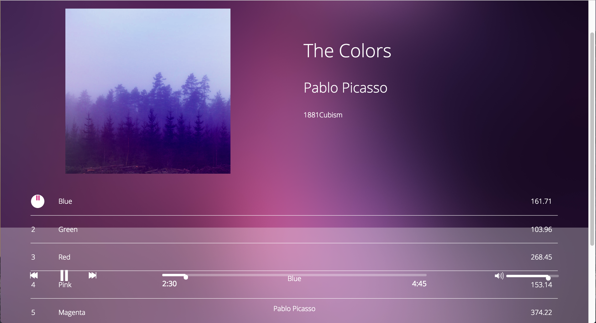
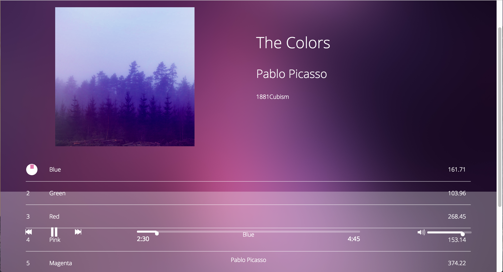

Bloc Jams
Summary
Bloc Jams is an audio application mirroring Spotify or any iTunes playlist.
(home page)
Explanation
Bloc Jams is a personal favorite because I am a lover of Javascript. Not only did I get to enhance my Vanillia Javascript skills, but I refactored the code to learn AngularJS. The application uses Buzz API for sound clips when a user clicks play buttons within the album view. Manipulating the play/pause feature was my biggest challenge, primarily because it had to interact with all other play button features.
 (collection view with seeded images)

(album view w/ songs)
(collection view with seeded images)

(album view w/ songs)
Conclusion
Web responsiveness and navigation is elegant and easy use. Although collections displays seeded repetitive images, it gives you a feel how a collection of albums would be layed out. Album plays and pauses songs while metrics, behind the scenes, analyzes played data. Learning Angular and applying it proved to be easier to use then plain JS.
(metric data utilizing D3.js)- Github: Try It Out or View the code in Vanilla JS or AngularJS
- Date: August 2016
- Services: JS, AngularJS, jQuery, Buzz, D3.js, HTML, CSS
 (firebase data)
(firebase data)
 (chat room)
(chat room)
 (canvas code)
(canvas code)